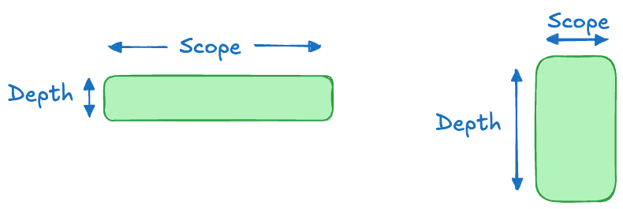

9 Presenting
If you like overheads, you’ll love PowerPoint.
Edward Tufte
A great presentation is memorable for the right reasons.
9.1 Introduction
In his book about the craft of scientific presentations, Alley (2013) tells the story of Zhengzhi Sheng, a postdoc at the University of Arkansas. Sheng had discovered a new superconductor, a very big deal that called for a press conference. Because Sheng was not a good speaker, the department chair Allen Hermann spoke at the press conference. Despite Hermann acknowledging the contribution of Sheng, it was Hermann who would receive most of the accolades for the discovery.
If we cannot effectively present our work as data scientists, we
- cannot impart new understanding to our audiences,
- cannot empower stakeholders to make decisions based on our work,
- cannot get appropriate credit for the work of the individual and the team,
- cannot advance our careers.
Presenting brings together the major forms of communication: speaking words combines with using written words and visual aids to support the story. A possibly great presentation can be derailed by shortcomings in any of these. The greatest content does not resonate if it is delivered in a flat tone of voice, boring, with lots of filler words (“Um”, “So”, “OK”, “Aaaand”, “Right”, “You know”). Slides with too many words distract the audience by reading. Poorly chosen visualizations leave them puzzled.
Drawing on Aristotle’s rhetorical triangle (Section 1.1), content (logos) is king and must not be sacrificed by burying it in extraneous details. But great content delivered without passion (pathos) misses the impact it could have. If it is obvious that we do not care about the subject, how can we expect the audience to care? In presentations of technical content scientists and engineers tend to place much emphasis on logos, the facts and logical evidence supporting the assertions. This can work well for an audience of scientists and engineers but not for a non-technical audience where character (ethos) and emotional appeal (pathos) are very important.
Presentations have advantages and disadvantages, why give a presentation if you could communicate by email, write a document, or produce an online visual essay? In many organizations presentations are common to share and disseminate information. You might not get a chance to choose the communication medium and be asked to give an oral presentation.
I worked for a company where it was customary to hold a monthly operational meeting. The purpose for the meeting was to provide the executives an update on a series of high-priority projects in progress around the company. A project would be part of the operational meeting at its inception and until it did not need input or oversight from the executives.
This was a great opportunity to let team members present on the status of projects in a high-stake, compressed format. You had 5-10 minutes to reintroduce to the company what the project was about, where it stood, what worked well and what did not. Then you had to be prepared to take questions from the senior executives.
Face-to-face presentations have advantages over other forms of communication that you should be aware of and take advantage of:
The speaker can read the audience. You can respond to cues from the audience. Are they attentive? Do they have a puzzled look on their face? Are they distracted? Do certain points or visuals hit particularly well?
The audience can read the speaker. Your authentic passion for the topic can be on full display. Some consider this also a disadvantage because lack of enthusiasm or poor delivery is also on full display.
The presenter can directly engage with the audience. You can ask questions to engage the audience and check their background, motivation, and understanding.
Emphasis through delivery. Important points can be emphasized through verbal cues, pausing, creating suspense, tone of voice, body language, gestures, etc. Telling a story orally with support of visual aids is the most effective way of knowledge transfer.
Witnessing of information delivery. You know who received the information.
Face-to-face presentations have also distinct disadvantages (Alley 2013). The information delivery is restricted to the pace of the speaker. For some audience members this pace is too slow, for others it is too fast. Unless the presentation is recorded, there is a single opportunity for the presenter to deliver and for the audience to attend. The audience cannot verify background information at the time information is communicated or look up unfamiliar words. Maybe most important, the success of the presentation correlates with the presenter’s ability to deliver the content.
9.2 Speaking Style
What are the greatest fears regarding oral presentations? To stand in front of the audience and to forget the words. To look stupid. To get stuck. To say something incorrect. To not be able to answer questions. To rely on technology that fails when it counts. To disappoint.
Not knowing what to say or forgetting the words ranks high among the dread of public speaking. This can be overcome with preparation, but before you prepare you have to settle how to deliver the words.
Also, never forget that the only person who knows the presentation is you. If you skip some material this time or add some verbiage next time—only you will know. The fear of forgetting words is somewhat irrational if you consider that the audience does not know what you were going to say.
Reading
Unless you are on a book tour and reading out loud your latest novel to an audience, reading the words is a bad idea. It might give you comfort to look at the text and to see what to say and what comes next. It takes a lot of training to read text and make it not sound like it is being read. Politicians, public speakers, and TV moderators who rely on teleprompters learn to get good at it.
Without such practice, read speech comes across as stilted, the pace is unnatural, and it undermines the speaker’s credibility to seemingly have to rely on being given the words.
Furthermore, reading words concentrates the speaker’s eye on the text and reduces eye contact with the audience. That reduces engagement.
The worst option is to put the text on slides and read the slides to the audience. It is amazing how often this presentation style is chosen. One of three things will happen when you read out loud the material on the slides
- The audience focuses on the text, reads along and the voice of the speaker becomes a distraction
- The audience ignores the text and focuses on the speaker, who is not focused on the audience
- The audience tries to focus on both text and speaker which makes their head explode because reading and listening have a different pace.
All three outcomes are bad.
When relying on slide notes that the audience does not see, make sure that the presentation technology allows you to see the nodes in a speaker view. If you rely on those notes for delivery and they are unavailable, the scaffolding for your talk is gone.
You might think that having the text of the speech available reduces preparation and rehearsal time. It does not. Being able to present from text as if you are not reading the text takes enormous practice and preparation.
If you give a recorded presentation to a large audience, you might be speaking into a camera with a teleprompter. The text is projected onto the lens of the camera you are looking at or onto a screen mounted close to the camera lens (Figure 9.1).
This is a particularly difficult setup. You have a limited field of vision, you have to look into the camera, you are also looking at the text you need to deliver, and you have to deliver it as if you are not reading.
A device that helps make the delivery more natural is to not look directly at the text and to not stare directly at the camera, but to move your eyes around the edges of the camera. This appears to the audience on the other side of the camera as if you are looking around the room. While looking at the bottom frame, then the side frame, then the top frame, and the bottom frame again, you can glance at the words on the teleprompter. Then all you have to do is deliver those words as if you had not read them.
Memorization
On the other spectrum from relying on seeing the actual text of the speech is memorization of the speech. This delivery style has advantages and disadvantages too.
Like reading, the text is precise and identical every time the speech is given. The speaker seems immediately credible for their recall of complex material. They appear to really know their stuff.
However, speaking from memory comes with pitfalls. What if you do not remember the words? The environment in which you memorize and rehearse is likely very different from the environment in which you deliver the presentation. When your body floods with adrenaline at the beginning of the speech, bright lights are shining in your eyes, and all eyes are on you, will you remember every word?
When speaking from memory, the pace can be unnatural and the speech can appear too rehearsed and fake. An audience question can throw you off, there is no opportunity to make adjustments to the speech on the fly.
Off the Cuff
Also known as impromptu speech, you are delivering without preparation and without additional aids such as notes, cue cards, comfort monitors, or teleprompters.
Impromptu speech is the polar opposite of reading text. You are freewheeling it. The material is flexible and can be adjusted on the fly, it will be (slightly) different every time. There is typically no outline unless the impromptu speech provides it as part of the oratory. The audience might not be sure where you are going.
The potential for disaster is high with this delivery form.
Extemporaneous Speech
Extemporaneous speaking simply means delivering a well-rehearsed speech without memorizing every word based on an outline of the material. It is the speaking style we recommend you should adopt.
When speaking extemporaneously, the pace and delivery is natural and the content is similar but not identical. The audience knows the outline of the talk and understands the broad strokes. You can adjust the pace and wording on the fly if necessary.
Speaking extemporaneously takes much practice and preparation. You commit to memory the outline of the talk and generate the words on the spot, even under pressure. Cue cards or notes can help you keep track of the outline and important points you need to make, without providing the exact wording.
When using slides, only a small fraction of the text appears on the slides. The slide content helps both speaker and audience to follow the organization of the talk.
When using note cards, leave them in your pocket or at the podium. Do not carry them around and look at them. This undermines the credibility of the speaker. It is OK to silently look at the notes, but while speaking to the audience the notes should be out of the way.
I attended a presentation by noted journalist and biographer Walter Isaacson some years ago. He presented on one of his latest book “Innovators”, a book about the creation of computing and the internet. It was a great speech—I think.
He had notes written out in longhand and just before stepping on stage he slipped them into the inside pocket of his jacket. Or so he thought. He had missed the pocket and the pages were now held by only friction between the two sides of the jacket. As he moved around the stage the pages tried more and more to to escape from the jacket. The audience was captivated, following the journey of the note pages, until they finally dropped to the floor. That is all I remember from the speech.
An end-to-end presentation can involve multiple delivery styles. The overall style can be extemporaneous but you might choose to memorize the first few sentences and the end. You can show and read quotes to make sure they are quoted precisely. When answering questions you use impromptu speech.
Preparation and Rehearsal
I was scheduled to give a 11-minute presentation about artificial intelligence from the main stage of a large user conference to about 5,000 attendees. In preparing for the talk I was informed that several comfort monitors would be mounted near the edge of the stage; someone would scroll the text of my speech from the production area (essentially teleprompters).
The speech was made more complex because I decided to give it while roaming back and forth across the stage on a hands-free Segway Ninebot. This was symbolic of being assisted by technology—we are driving it, it is not driving us. Clever, eh?
I prepared for the talk by rehearsing it on the 45-minute loop walking around a lake in the neighborhood. I could fit three to four deliveries into a loop every other day. Rehearsing meant speaking it out loud, folks were probably scratching their head when they saw me talking loudly about artificial intelligence while exercising.
Separately, I practiced on the Segway.
By the time of the presentation the teleprompting on the comfort monitors was not necessary. It was reassuring to know that the text was there should I need to be reminded. Because of the many rehearsals talking out loud, this was just another one of those occasions giving the speech. I could concentrate on not driving the Segway off the stage.
When you attend an enjoyable 20-minute presentation, you do not see the hard work and preparation that made the presentation enjoyable. Creating and delivering great presentations takes time. Even creating and delivering good or average presentations takes time.
Regardless of which speaking style you use, you have to prepare for it and the preparation must match the style. For example, giving great unrehearsed, impromptu speeches is very difficult and requires skill and preparation. You have to organize the material on the fly, construct stories as you go, be in total command of the material, and engage the audience without the help of other aids.
You might be required to read text when a comfort monitor or teleprompter is used and have to prepare and rehearse to deliver with a natural tone and pace despite reading.
Most speakers are under-prepared rather than over-prepared.
I was fortunate to have an office next to a professor who had won the highest teaching awards at the university. Having taken courses from him myself as a student I remembered the carefully chosen class material, the clever derivations that let us see the light, and the masterful oral delivery.
When I later joined the university as an assistant professor, our offices were next to each other. Before every lecture, even for a course he had taught many times before, he rehearsed the lecture in his office by speaking out loud important parts of the content. That meticulous and dedicated preparation contributed to his teaching excellence.
Preparation and rehearsal also reduces the chances that Murphy’s Law strikes.
Murphy’s law
Named after aerospace engineer Edward A. Murphy, Jr., the law is quoted as
Anything that can go wrong will go wrong.
If something can go wrong, it will.
If there is a possibility of several things going wrong, the one that will cause the most damage will be the one to go wrong.
A corollary of the last law is that if something can go wrong at a worse time it will happen then.
Examples of Murphy’s law in presentations are many. As you can imagine, these failures are mostly not unforeseeable events you are powerless against. Most of the times they are foreseeable problems that you did not anticipate and did not prepare for.
The presentation works great on your laptop but you are presenting from someone else’s device that is lacking the necessary fonts.
A demo crashes because the presentation machine does not have the right software installed.
A presentation relies on access to the internet, but that is not available when presenting from a client’s conference room.
The internet bandwidth does not support the download speed needed to run an animation smoothly.
No sound
The projector overheats and goes into cooldown mode in the middle of the presentation.
You forgot to enable screen sharing on the Mac for the specific video hosting technology.
The demo that worked well every time in rehearsal produces really strange results when it matters, because you did not set a random number seed that would make the demo reproducible.
The poster presentation looked great on the computer screen but what comes back from the printing center has wonky spacing of paragraphs and graphics. The layout is completely off.
Here are some examples where Murphy’s law struck presentations I gave or attended and lessons learned.
This happened. An executive gave a demonstration of social media analytics to the CEO, producing word clouds of the topics most talked about on Twitter (as it was called back then). The technology worked great, the problem was that they queried Twitter live at the time of the demo, and whatever threads they pulled were discussing some X-rated topics. The word cloud produced from that data was memorable.
Lesson. If you use real-time data in a demo, get a copy of the data first, so you know what you are dealing with. Especially when pulling data from the internet, it can be an unfriendly place. Save the data to some place and stream it from there to the application. This is still a live, real-time demo, but it is repeatable. Let the audience know that this is what you are doing.This happened. A candidate for a teaching position gave a test lecture that involved a live Python demo. The machine learning model he was lecturing about was applied to a small data set to facilitate training during class—nothing wrong with that. However the results of the analysis were not meaningful and did not support the points he was trying to make.
Lesson. Random number generators affect statistical results that depend on random numbers in some form. Many data science tasks invole random numbers. The effect of different random number streams is particularly striking with small data sets and small sample sizes, situations that are common in demos that are designed to make a point. Make sure you fix the random number stream by setting a seed in a demo that depends on randomness.This happened. We were rehearsing a large on-stage presentation to several thousand attendees of a software conference. The presentation was also being streamed live to a worldwide audience. The presentation involved four individual live demos by developers of the particular aspect of the software. It was a big deal for the developers to be asked to present their work on such a stage. They had all worked very hard on the presentations, we had rehearsed a number of times at company headquarters. The planning and preparation for such an event takes months. The on-stage rehearsal also went very well, no glitches or hiccups, everybody was on top of their material. We needed internet for the software to work and had brought our own corporate network to the venue so we could hardwire all machines. That is preparation!
The next day, when it counted, the second or third demo in the lineup did not work at all. It was like the internet was not working for that machine. The developer tried to fix things but was not sure what was going on—while thousands were watching in real time. As moderator of the show I had to improvise and move on, not being able to cover that part of the show. The developer was mortified and embarrassed. To this day I am not sure whether he ever recovered from this experience.
What went wrong? During on-stage rehearsal the developer forgot to plug in the Ethernet cable for the corporate network into his laptop. He had run over WiFi and that had worked. After rehearsal, the stage was sequestered and all machines remained on stage for the show in the morning. The machine thus did not get another change to be plugged into the network. While WiFi worked fine during rehearsal with just a few folks in the room, it broke down when thousands of attendees brought their laptops and smart phones into the room.
Lesson. Even after the most meticulous preparation there is something that can get overlooked. If you have multiple things, like multiple laptops in this case, are they all the same? Be prepared to improvise.This happened. A presentation in a hotel ballroom to about 100 attendees. A small production area in the back of the room handled projection on two large screens, microphones, etc. In the middle of the presentation the mic dies and the screens go black. The onstage laptop shows the presentation but everything else is dead.
What went wrong? The cables that ran from the front of the room—where the screens were located—to the production area in the back were supposed to be covered and taped to the floor. You don’t want folks to trip over cables or cables come unplugged. It so happened that just under a desk in the production area the main cable feeding power to the stage was extended by another cable and the two sides had not been taped down. As an engineer moved his feet he knocked the connection loose and the room went dark.
Lesson. Be prepared to improvise.
Preparation helps reduce the chances that presentations derail. In several of the examples, live demos were involved and that adds a certain risk. Many eschew running anything live for fear that things could go wrong. I have always loved demoing things live, running software in real time, analyzing real data during presentations. It makes presentations more interesting, more dynamic, and more real.
My advice is not to drop demos and live material and to be prepared for the occasional hiccup when things do not work. For example, have a video of the demo handy (stored locally on your machine) that you produced ahead of time. If the technology does not work for the live demo, show the video.
Almost all live elements in presentations worked for me. The few that failed in some way are not reason enough to give up on it.
9.3 Mistakes
Alley (2013) lists many critical errors in scientific presentations. These also apply to presenting data science content. We summarize some mistakes here unless they have been covered elsewhere in this chapter.
The Wrong Speech. You might be giving the wrong speech if you are …
- Not targeting the audience
- Not grasping the purpose of the presentation
- Not considering the occasion of the presentation
- Not considering the format of the presentation (bringing slides to a roundtable)
Boring the Audience. “Are you not entertained?” To avoid the stinging criticism of a boring presentation, remember storytelling.
- Make connections with the audience
- Engage the audience emotionally
- Use metaphors and analogies to relate concepts
- Be passionate
- Tell stories
- Do not overwhelm the audience with details
Covering too Much. If you spend 80% of the project doing X, it does not mean you should spend 80% of the project presentation talking about X. Overwhelming the audience with too much content is bad, as is covering content at too great a depth. You should start the presentation at the level of knowledge of your audience. If the goal for the audience is to learn, then you take them from their existing level of knowledge to a higher one. The difficulty is assessing their knowledge accurately.
Too many presentations try to convey all the work that has been done rather than address what the audience wants and needs. If the audience does not want or need to learn, why give a lecture?
Imagine the amount of information the audience can consume as the area of a rectangle, the sides represent the scope (or breadth) of the talk and the depth at which the scope is covered. Shorter talks, or talks to audiences with less pre-existing knowledge work with a smaller area. Now you need to decide how to arrange that area into scope x depth (Figure 9.2). Less scope at greater depth or greater scope at lesser depth. A wider scope touches on more topics and allows the audience to connect with something in the talk.Figure 9.2: The amount of information covered as a function of scope and depth Losing the Audience at the Start. Make the beginning of the presentation as clear and engaging as possible. Moving on from a title slide too fast or an outline slide that would help the audience mentally organize the topic is a recipe for losing the audience at the start. If there are no opportunities to ask questions or to get feedback, you might not get them back.
Losing the Audience along the Way. It is easy for the audience to fall behind during presentations, even when the presentation is carefully structured. They do not have the luxury to go back and look at something a second time or to take a time out and think about what was just said. By the time they are done contemplating a point the speaker made, the presentation has moved on and increased the gap between speaker and audience./ / An audience that falls behind is getting lost. To minimize the chances of losing the audience you can use a few devices. Mak sure the audience knows the destination of the presentation. Remind them during the presentation where they are now relative to the destination. The old adage “Tell them what you are going to tell them. Tell them. Then tell them what you just told them” applies here. Avoid going off topic or tangential ruminations. Make sure the audience knows when you are speculating, presenting straw-man proposals, and when you are stating facts. Let the audience know when the presentation is transitioning from the beginning to the middle and to the end (remember the ABT formula). Pause at transition points to allow the audience to collect their thoughts and catch up with you.
PowerPoint (or Google Slides or …). The use of presentation software such as Microsoft PowerPoint or Google Slides is common and often expected. Unfortunately, it is not a good format to transfer knowledge as we know from the discussion of storytelling (Chapter 3). Jeff Bezos, founder and former CEO of Amazon, famously disallowed the use of PowerPoint at Amazon.
If you use PowerPoint-style software in presentations, we recommend the assertion–evidence format for slides. A headline-style title provides the assertion of the slide, the important message being conveyed. The remainder of the slide consists of few bullets (if any) and visuals that provide evidence of the assertion.
The default slide layouts offered by PowerPoint are not necessarily good presentation aids. If you have a title slide, dress it up with an image that connects to the presentation, rather than showing the title of the talk and the speaker affiliation. Short talks do not need an outline talk, if you add an outline, think of a format different from a bullet list. Try to get away from bullet lists as much as you can. How about an assertion or simple sentence centered on the slide as the only element?
During my time in the corporate world, the visual aids in my presentations changed greatly; from the typical sequence of bullet lists to slides that contain a single image, filling the entire area, with a single term or to slides that contained only a few words to help with organizing a topic. Figure 9.3 and Figure 9.4 are examples of this design philosophy.
While the slide is shown, I present on the topic displayed as text. The format is visually engaging but keeps the audience focus on the speaker. They are not distracted by text on the slides or what else is going on with the slide, except for taking in the image. Since a slide might stay up for several minutes, the audience has time to connect the elements of the background image with the presentation. A downside of this approach is the need for high-quality images. And you need to know your presentation, the slides are not much help to the speaker to recall the material.
A nice side effect of adopting this design, no one has ever requested to use my slides in their presentations. Ha! 😄
- Not Paying Attention. There is much that a communicator needs to pay attention to and failure to do so can derail a communication effort. As a presenter, you need to pay attention to the environment, the audience, the technology, and to yourself. A separate chapter is dedicated to Paying Attention (Chapter 11) because there is so much to it.
9.4 Checklist for Oral Presentations
Content
Structure
ABT
Visual Aids
Delivery
9.5 Presenting over Video
Since the COVID-19 pandemic, presenting over video has become commonplace.